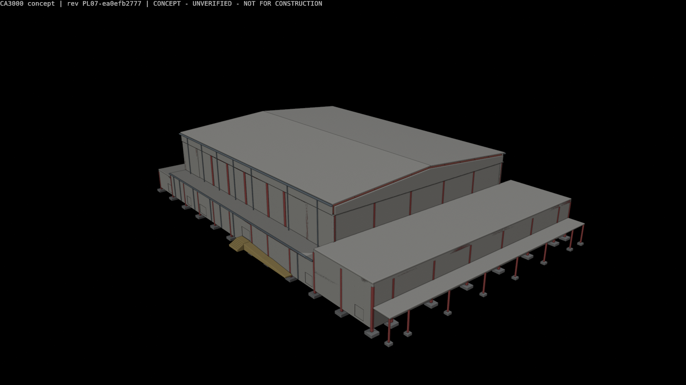
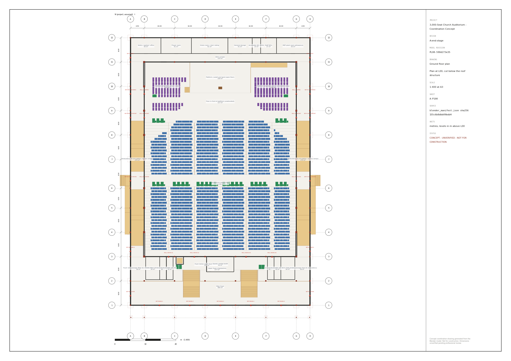
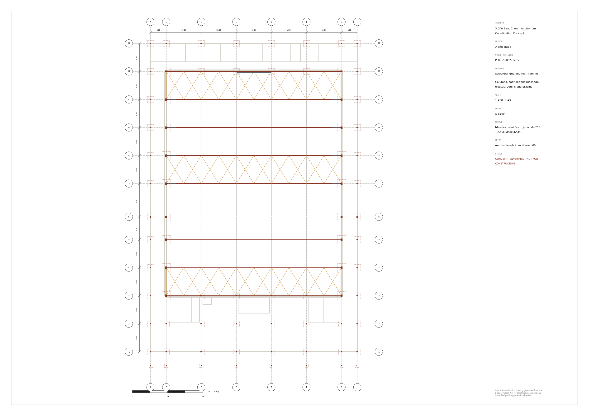
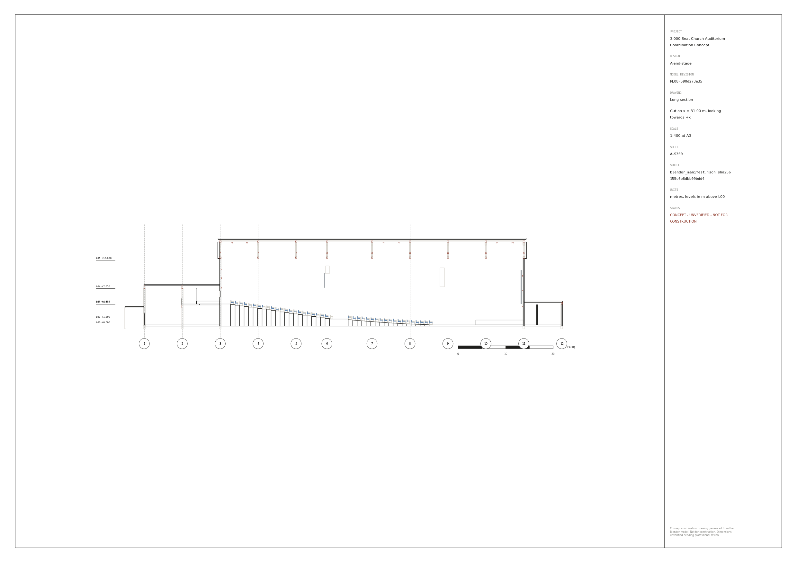
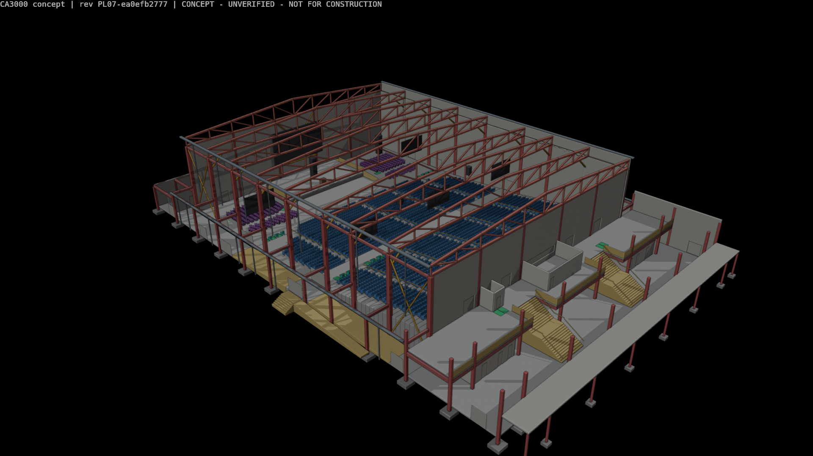
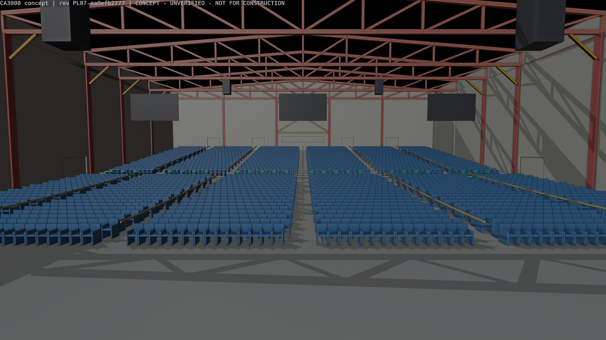
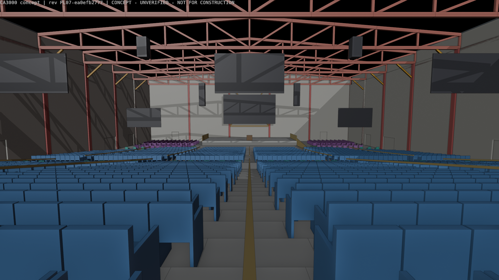
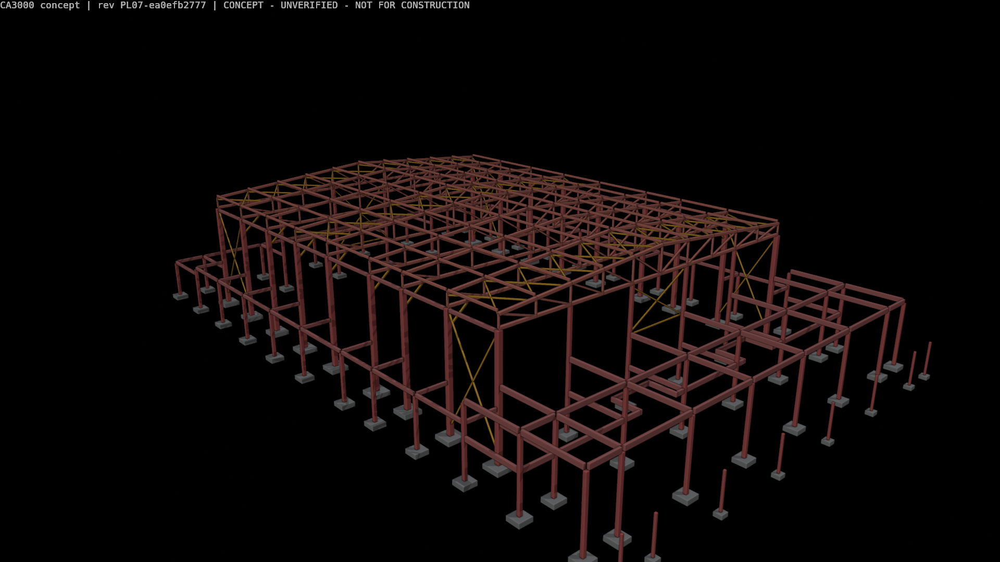
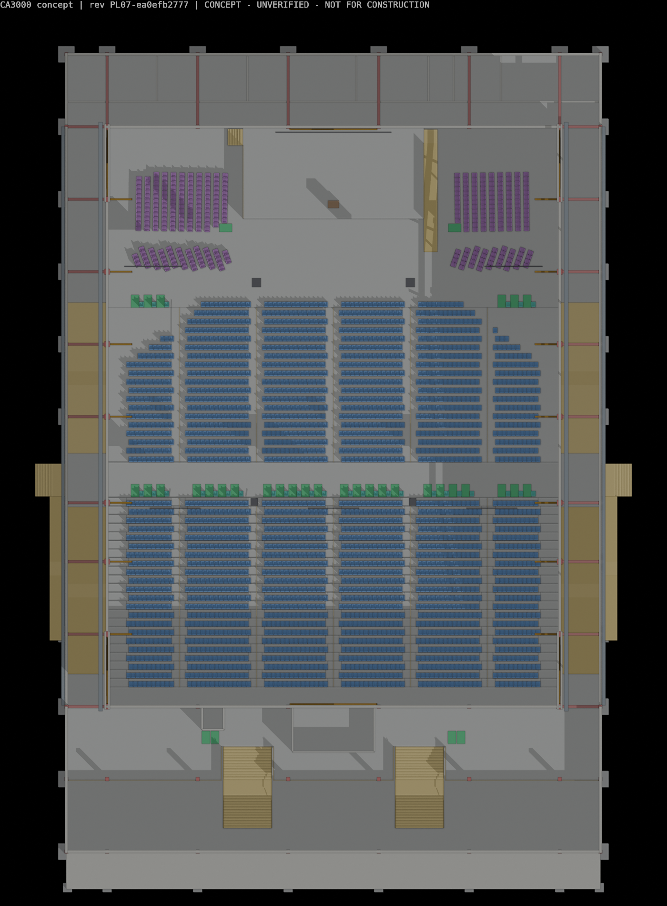

Design ID A-end-stage · model revision PL08-590d273e35 · Zimbabwe (site not identified) · 2026-11-02
CONCEPT — UNVERIFIED · NOT FOR CONSTRUCTION. Reviewer scores are QA metrics, not certification.
| Design ID | A-end-stage |
| Model revision | PL08-590d273e35 |
| Manifest SHA-256 | 155c6b8dbb09bdd4c70fd9c34f65417aca5e06663b3a7d49e3848c3f509ca95c |
| Blender | 5.2.3 LTS |
| Units | metres |
| Status | CONCEPT - UNVERIFIED - NOT FOR CONSTRUCTION |
| Build | scripts/run_pipeline.py --iteration N --tag PL (writes only inside this folder; Blender from BLENDER_EXE) |
| Measurement provenance | Every figure, table and drawing in this document is generated from this design's Blender manifest, its verified reports (geometry_checks, blend_verification, ifc_validation) and comparisons/compare.py run on the same manifest. |
| Source | SHA-256 (16) |
|---|---|
| config/auditorium_params.json | ae79bb7a6bea4397 |
| scripts/auditorium_layout.py | d9306ca6bcfbcdd3 |
| scripts/build_auditorium.py | 988f3187f2ccd364 |
| scripts/verify_blend.py | 5d62c1b9ab72485c |
| scripts/export_ifc.py | f568e61847fb12c3 |
| scripts/validate_ifc.py | a77ebccf63bd47e2 |
| scripts/make_drawings.py | 82dd1dabb80004fa |
| scripts/generate_reports.py | 31c1a3f6a814f2e2 |
| scripts/run_pipeline.py | 44c1907d15e9911a |
| tests/test_layout.py | 2d6c6de4700f2a8a |
The platform stands at one end of a 50 m wide hall; 41 straight rows rise to an upper foyer at the rear. 9 steel trusses of 50.0 m span the hall width.
Measured by comparisons/compare.py from this design's manifest (identical code for both options).
| Measure | Value |
|---|---|
| Congregation seats (verified: layout, .blend, IFC, CSV) | 3000 |
| Rows | 41 |
| Eye-to-pulpit distance mean / median / max (m) | 35.52 / 36.83 / 57.58 |
| Seats within 20 m / 30 m of the pulpit | 13% / 38% |
| Head turn to pulpit mean / max (deg) | 20.5 / 52.5 |
| Max bearing from the pulpit (deg) | 52.5 |
| Min C-value n1 / n2 (from chair objects) | 0.0603 / 0.1206 |
| Footprint (m) | 59.3 x 92.3 |
| Hall floor area / per seat (m2) | 3165.9 / 1.055 |
| Hall air volume / per seat (m3) | 49768 / 16.59 |
| Roof area (sloped, m2) / top (m) | 5332.3 / 18.4 |
| Trusses / span (m) | 9 / 50.0 |
| Columns / pad footing concrete (m3) | 76 / 163.4 |
| Hall exits / door width (m) | 10 / 28.8 |
| Wheelchair spaces / lifts | 30 / 1 |
| Choir chairs / platform area (m2) | 386 / 200.0 |
| Source | Result |
|---|---|
| Layout engine checks | {"PASS": 37, "FAIL": 0, "WARN": 4} |
| Re-opened .blend checks | {"PASS": 18, "FAIL": 0, "WARN": 0} |
| IFC validation | {"PASS": 21, "FAIL": 0, "WARN": 0} |



Workbench renders of the saved model, stamped with the revision (renders from PL07-ea0efb2777; no renders were archived for PL08-590d273e35).





reports/row_schedule.csv
| row | section | seats | floor_elevation |
|---|---|---|---|
| 1 | front | 49 | 0.0 |
| 2 | front | 53 | 0.025 |
| 3 | front | 56 | 0.055 |
| 4 | front | 57 | 0.09 |
| 5 | front | 62 | 0.13 |
| 6 | front | 67 | 0.175 |
| 7 | front | 72 | 0.225 |
| 8 | front | 76 | 0.275 |
| 9 | front | 76 | 0.335 |
| 10 | front | 76 | 0.395 |
| 11 | front | 76 | 0.46 |
| 12 | front | 76 | 0.525 |
| 13 | front | 76 | 0.595 |
| 14 | front | 76 | 0.665 |
| 15 | front | 76 | 0.74 |
| 16 | front | 76 | 0.815 |
| 17 | front | 76 | 0.895 |
| 18 | front | 76 | 0.975 |
| 19 | front | 76 | 1.06 |
| 20 | rear | 76 | 1.34 |
| 21 | rear | 76 | 1.48 |
| 22 | rear | 76 | 1.62 |
| 23 | rear | 76 | 1.76 |
| 24 | rear | 76 | 1.9 |
| 25 | rear | 76 | 2.04 |
| 26 | rear | 76 | 2.18 |
| 27 | rear | 76 | 2.32 |
| 28 | rear | 76 | 2.46 |
| 29 | rear | 76 | 2.6 |
| 30 | rear | 76 | 2.74 |
| 31 | rear | 76 | 2.88 |
| 32 | rear | 76 | 3.02 |
| 33 | rear | 76 | 3.16 |
| 34 | rear | 76 | 3.3 |
| 35 | rear | 76 | 3.44 |
| 36 | rear | 76 | 3.58 |
| 37 | rear | 76 | 3.72 |
| 38 | rear | 76 | 3.86 |
| 39 | rear | 76 | 4.0 |
| 40 | rear | 76 | 4.14 |
| 41 | rear | 76 | 4.28 |
reports/exit_schedule.csv, geometry_checks.json (placeholder factors, not code values)
| exit_id | wall | clear_width_m | load_queue_balanced |
|---|---|---|---|
| DR-HALL-W-FRONT | W | 3.36 | 435 |
| DR-HALL-W-WING | W | 2.24 | 272 |
| DR-HALL-W-CROSS | W | 3.36 | 473 |
| DR-HALL-E-FRONT | E | 3.36 | 437 |
| DR-HALL-E-WING | E | 2.24 | 272 |
| DR-HALL-E-CROSS | E | 3.36 | 474 |
| DR-HALL-REAR-A1 | REAR | 2.24 | 265 |
| DR-HALL-REAR-A2 | REAR | 2.24 | 308 |
| DR-HALL-REAR-A4 | REAR | 2.24 | 307 |
| DR-HALL-REAR-A5 | REAR | 2.24 | 265 |
| Egress metric (own engine) | Value |
|---|---|
| occupants_assigned_in_hall | 3060 |
| platform_choir_added | 448 |
| total_hall_exit_width | 26.88 |
| total_required_width_placeholder | 17.54 |
| rear_load_to_upper_foyer | 1145 |
| upper_foyer_stair_width | 10.8 |
| upper_foyer_stair_required_placeholder | 8.59 |
| max_travel_hall | 50.87 |
| max_travel_hall_to_nearest_exit | 39.73 |
| count_nearest_travel_over_flag | 330 |
| max_travel_total | 61.62 |
| boh_staff | 30 |
| building_total_occupants | 3538 |
| count_travel_hall_over_flag | 490 |
| count_travel_total_over_flag | 4 |
comparisons/reviews/iter-01/A-*.json — QA scores, not certification.
| Discipline | Score /10 |
|---|---|
| accessibility | 7.0 |
| acoustics_av | 5.5 |
| aesthetics | 4.0 |
| architecture | 6.0 |
| church_functionality | 5.5 |
| constructability_maintenance | 6.0 |
| cost_drivers | 6.5 |
| life_safety | 5.5 |
| structural_engineering | 7.0 |
| Severity | Discipline | Finding |
|---|---|---|
| MAJOR | church_functionality | The 41-row end-stage hall puts a large part of the congregation far from the preacher: 1,261 seats are more than 40 m and 837 more than 45 m from the pulpit, so the rear half depends on IMAG screens to see the preacher's face. Pushing the platform back against |
| MAJOR | church_functionality | Straight, parallel rows in a 49.4 m wide hall make side seats turn their heads a long way: 670 seats turn more than 30 deg (max 52.5 deg) and 156 sit more than 45 deg off the pulpit. A fanned bowl was never studied. |
| MAJOR | architecture | Arrival and departure rely on the upper foyer. Rows 20-41 (about 1,600 people) enter and leave through rear exits at +4.42, then use two foyer stairs (10.8 m total) down to a ground foyer of only 484 m2 plus 225 m2 under the mezzanine. That is about 0.24 m2 pe |
| MAJOR | architecture | The sanitary allowance is far too small for 3,000+ occupants: two 34 m2 toilet blocks plus four 16 m2 accessible WCs, with no WCs on the upper foyer. This makes the foyer layout unreliable, because correctly sized toilets would take a lot of foyer area. |
| MAJOR | aesthetics | The exterior reads as a windowless industrial shed: an 88 m long gabled box with 9.6 m2 of glazing in total. The entrance is a low flat-roofed foyer block with a plain columned canopy, giving no civic or ecclesiastical presence, no daylight to the hall, and no |
| MAJOR | life_safety | The two upper-foyer stairs that carry the rear 1,145 occupants down from +4.42 m are single straight flights of 26 risers with no intermediate landing, open to the foyer (not enclosed or protected). |
| MAJOR | life_safety | Travel distances exceed the placeholder flags. They are honestly logged, but they remain the main weakness of a 50 m wide end-stage hall: 330 occupants are over 30 m from the nearest exit (max 39.7 m), 490 are over 30 m with queue balancing (max 50.9 m), and t |
| MAJOR | life_safety | If occupants take the shortest route to an external door, the two mid cross-aisle exits are overloaded (817 and 843 occupants against 3.36 m clear width). The queue-balanced assignment that passes is a heuristic, and occupants naturally favour these exits beca |
| MAJOR | acoustics_av | The hall volume is very large for amplified worship (49,768 m3, or 16.6 m3 per seat), and the hall is a box whose rear wall runs parallel to the platform about 48 m away. Without heavy absorption the reverberation will be long, and the rear wall will send a la |
| MAJOR | constructability_maintenance | Purlins are modelled only at truss panel points, i.e. at 5.0 m centres along the slope (5.02 m top-chord panels), spanning 8-9.5 m between trusses. Typical trapezoidal metal roof sheeting does not span ~5 m between purlins, so secondary purlins would be needed |
| MAJOR | constructability_maintenance | Hall eaves gutters sit at about +15.9 to +16.1 m and the 14 hall downpipes discharge onto the ambulatory roofs (cascade). The smaller ambulatory gutters (0.35 x 0.20 placeholder) then take hall plus ambulatory run-off above the ambulatories, which are also esc |
| MINOR | church_functionality | The 117 m2 floor in front of the platform is still marked 'unallocated'. As an altar-call / ministry floor it is a strength, but it is undeclared and leaves a 5.85 m dead gap between the preacher and the front row. |
| MINOR | church_functionality | The choir in the side wings (386 chairs) faces across the platform in straight rows. It sits at floor level below a 1.00 m platform, so for most of the congregation it is seen side-on and partly hidden. Choir-to-conductor and choir-to-band sightlines are not c |
| MINOR | aesthetics | The interior is dominated by exposed trusses, a blank rear wall and six hanging screens (three delay screens mid-hall). There is no focal architectural treatment behind the platform. |
| MINOR | architecture | No renders exist for the frozen baseline PL08. The latest renders are PL07, so the PL08 stair, ramp and choir-row changes are shown only in drawings. |
| MINOR | life_safety | The rear aisle steps use a 0.14 m riser with a 0.95 m going (one step per row), which gives an irregular stride on a busy egress route. The 1:11.18 front slope is steep for an aisle used in an evacuation. |
| MINOR | life_safety | The reports contain stale or inconsistent figures. OI-18 still describes the PL06 choir arrangement and a 0.90 m platform (now 1.00 m), and the basis of design gives the maximum eye distance as both 51.3 m and 44.5 m in the same section. |
| MINOR | accessibility | Wheelchair users have no place on the rear (+4.42) level, so the lift serves only the upper foyer and booth. Refuge on the open upper foyer is an allowance only, with no enclosure or communication. |
| MINOR | accessibility | No wheelchair place is on the central axis near the front. The 24 mid-band places sit in one line at +1.2 m, and the 6 front places are at the hall-floor corners (x 7-11 m and 47-51 m). |
| MINOR | acoustics_av | Screen coverage passes SGT-H1, but 2,002 seats depend on screens. The delay screens and speakers hang over the middle of the hall at +9.4 to +11.6 m, and there is no check of vertical viewing angle or of trusses blocking the view. The main arrays (y 62.8) are |
| MINOR | acoustics_av | The open front edge of the platform and the band area sit close to the main LED wall and main arrays, and the concept does not address microphone feedback or monitoring at the pulpit. |
| MINOR | structural_engineering | Portal knee braces land on the truss bottom chord mid-panel (x = 7.2 m, between panel points at 4.5 m and 9.5 m), which puts bending into the bottom chord. The knee-braced portal concept on 14 m columns with a 1.5 m-deep truss end is plausible, but its stiffne |
# Option A (end stage) - revision history Every revision ID is `<tag><nn>-<first 10 hex of SHA-256 over the source files>`. Archived outputs are in `archive/<rev>/`. Decisions are recorded in `../../DESIGN_BRIEF.md` (Client design decisions). | Revision | Date | Kind | Change | Sources archived | |---|---|---|---|---| | IT01-45b0e08c36 | 2026-11-01 | review loop 1 | first build | outputs only | | IT02-325e67e273 | 2026-11-01 | review loop 2 | repairs | outputs only | | IT03-1e06f520e1 | 2026-11-01 | review loop 3 | repairs; 8.79/10 NOT_ACCEPTED (see FINAL_REPORT.md) | outputs only | | PL01-7cafe48b2e | 2026-11-01 | post-loop | side choir facing inward | outputs only | | PL02-18dac43917 | 2026-11-01 | post-loop | review response: trimmed off-axis seats, simpler foyer (two central stairs) | **yes - `archive/pl-02/source/`, reproduced** | | PL03-3e57114669 | 2026-11-01 | post-loop | choir risers removed | outputs only | | PL04-7e854e086c | 2026-11-01 | post-loop | 144 choir chairs in the wings | outputs only | | PL05-cba999fc37 | 2026-11-01 | post-loop | platform 20 x 10 m | outputs only | | PL06-966bde8984 | 2026-11-02 | post-loop | choir in four zones | outputs only | | PL07-ea0efb2777 | 2026-11-02 | post-loop | platform to rear wall, +1.00 m | outputs only | | **PL08-590d273e35** | 2026-11-02 | post-loop | stair/ramp moves, straight choir rows (386 chairs) - **Option A baseline** | **yes - `archive/pl-08/source/`, reproduced** | `proposal/legacy-PL06-21c8b6d8b4/` holds the proposal data and drawings that were built (outside this pipeline) from a model labelled `PL06-21c8b6d8b4`. That revision ID matches no archived build; treat it as superseded and unverified.